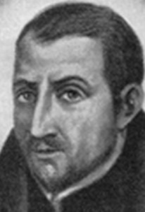

Mučenici iz Engleske i Walesa (10 svetaca)
Svećenik · Mučenik
Sv. Henrik Walpole
1558. – 1595.
Engleski isusovac svjedočio je vjeru u vrijeme progona katoličkih svećenika. Njegov svećenički put završio je zatočeništvom i pogubljenjem, a Crkva ga časti među Četrdesetoricom mučenika Engleske i Walesa.

Izvor slike
- Spomendan
- 7. travnja
- Zaštitništvo
- Nije navedeno u izvoru
- Životni vijek
- 1558. – 1595.
- Slavi se
- 7. travnja
Životopis
Henry Walpole rođen je 1558. u Dockingu u Norfolku, na istoku Engleske, kao najstariji sin Christophera Walpolea i Margery Beckham. Školovao se u Norwichu, zatim na koledžu Peterhouse u Cambridgeu, a pravo je studirao u londonskom Gray’s Innu. Pripadao je naraštaju koji je odrastao usred vjerskih podjela i zakona koji su katolicima ograničavali život. U Londonu je upoznao katoličke plemićke obitelji koje nisu prihvaćale državno bogoslužje. Zbog susreta s njima privukao je i pozornost uhoda. Put koji se otvarao mladom pravniku uskoro je dobio posve drukčiji smjer.
Na njegov je život osobito utjecao isusovac Edmund Campion. Walpole je slušao njegove rasprave s anglikanskim teolozima i bio nazočan njegovu pogubljenju 1581. Prema životopisnim izvještajima, Campionova je krv tada poprskala njegovu odjeću. Susret s mučenikovim svjedočanstvom ohrabrio ga je da napusti pravnički put i pripravi se za svećeništvo. Campionu je posvetio pjesnički tekst koji je potajno tiskan i širen Londonom. U ozračju progona i to je predstavljalo opasnost za autora i ljude koji su sudjelovali u tiskanju.
Vlasti su nastojale otkriti tko stoji iza toga djela. Tiskar Valenger, Walpoleov prijatelj, bio je teško kažnjen, ali ga nije odao. Henry se najprije sklonio u obiteljski dom u Norfolku, a zatim napustio Englesku. Preko Rouena i Pariza stigao je 1582. u Reims. Ondje je započeo put svećeničke izobrazbe izvan domovine, poput drugih engleskih katolika koji se nisu mogli slobodno školovati za službu u vlastitoj zemlji. Sljedeće je godine primljen u Engleski kolegij u Rimu.
Godine 1584. stupio je u Družbu Isusovu. Studij je nastavio u Francuskoj, ponajprije na Škotskom kolegiju u Pont-à-Moussonu. Njegova je formacija tako prolazila kroz više zemalja i crkvenih ustanova koje su podupirale katolički život u Engleskoj. U Metzu je primio podđakonsko i đakonsko ređenje, a za svećenika je zaređen u Parizu 17. prosinca 1588. Poznavao je engleski, latinski, talijanski, francuski i španjolski jezik. Jezično znanje i iskustvo različitih sredina pratili su ga u službama koje su mu poglavari povjeravali.
Nakon ređenja poslan je u Bruxelles, a potom je postao kapelan engleskim i irskim katoličkim izbjeglicama koje su služile u španjolskim postrojbama u Nizozemskoj. Među ljudima udaljenima od domovine obavljao je svećeničku službu u ratnim prilikama. Njegovo prvo iskustvo zatočenja dogodilo se upravo ondje. Zarobljen je i odveden u Flushing, današnji Vlissingen, gdje je bio zatvoren i mučen. Otkupninu za njegovo oslobođenje platili su brat Michael i isusovački poglavari.
Nakon oslobođenja nastavio je isusovačku formaciju u gradu Tournai. Zatim je poslan u Španjolsku, gdje je pomagao u radu engleskih sjemeništa. Posebno je bio povezan s kolegijem u Valladolidu. Služenje budućim svećenicima bilo je dio brige za Crkvu u domovini: u tim su se ustanovama školovali ljudi koji su se trebali vratiti među progonjene katolike. Walpoleov povratak u Englesku uslijedio je 1593. godine. Iza njega su već bili svećenička formacija, kapelanska služba, rad u sjemeništu i iskustvo tamnice.
Na put je krenuo iz Dunkerquea zajedno s bratom Thomasom i jednim engleskim vojnikom. Brod je trebao pristati u Škotskoj jer su južne engleske luke bile zatvorene zbog kuge. Nakon deset dana olujne plovidbe putnici su 4. prosinca 1593. iskrcani kod Flamborough Heada u Yorkshireu. Na kopnu su se razdvojili. Walpole se sklonio u gostionicu u Bridlingtonu, ali je ondje ubrzo uhićen. Izdao ga je suputnik s broda. Svećenik koji se godinama pripravljao za službu u Engleskoj na slobodi je nakon povratka proveo tek vrlo kratko vrijeme.
Odveden je u zatvor u Yorku. Tijekom prvoga ispitivanja priznao je da je isusovac i da je u Englesku došao radi vjerskoga poslanja. Nakon nekoliko mjeseci premješten je u londonski Tower. Ondje je njegovo ispitivanje preuzeo Richard Topcliffe, poznat po progonu katoličkih svećenika. Walpole je bio podvrgnut dugotrajnim i ponavljanim mučenjima. Zatvor je trajao šesnaest mjeseci, mnogo dulje od kratkoga vremena između njegova iskrcavanja i uhićenja. Za njega se povratak u domovinu gotovo odmah pretvorio u zatočenje.
U proljeće 1595. vraćen je u York na suđenje. S njim je pred sudom bio i svećenik Alexander Rawlins. Optužba se oslanjala na zakon prema kojemu je povratak u Englesku nakon katoličkoga svećeničkog ređenja u inozemstvu mogao biti kažnjen kao veleizdaja. Walpole se branio oslanjajući se i na svoje pravno obrazovanje. Upozorio je da zakon predviđa rok od tri dana u kojem se svećenik može prijaviti vlastima. On je bio uhićen prije isteka toga roka, unutar jednoga dana nakon dolaska.
Suci su zatim zatražili da položi prisegu kojom bi priznao kraljičino vrhovništvo i u vjerskim pitanjima. Walpole je to odbio. Osuđen je na smrt, zajedno s Rawlinsom. Njihova je kazna trebala biti izvršena 7. travnja 1595. na stratištu u Yorku. Rawlins je pogubljen prvi. Kada je došao njegov red, Walpole se popeo na ljestve uz vješala i pozvao okupljene da mole s njim. Prema isusovačkom životopisu, izmolio je Očenaš prije nego što ga je krvnik prekinuo i započeo izvršenje kazne.
Walpole je umro u dobi od približno trideset i sedam godina. Njegov je životopis ubrzo nakon smrti objavljen i na španjolskom, a njegova su pisma sačuvala uspomenu na put koji ga je iz Norfolka vodio preko Francuske, Rima, Nizozemske i Španjolske natrag u Englesku. Papa Pio XI. proglasio ga je blaženim 1929., a papa Pavao VI. svetim 25. listopada 1970., među Četrdeset mučenika Engleske i Walesa. Njegova se uspomena posebno čuva 7. travnja, na dan smrti, a u rodnome Norfolku njegovo ime nosi katolička crkva u Burnham Marketu. Crkva u njemu časti svećenika koji je primjerom drugoga mučenika bio ohrabren za poziv i koji je vlastitu vjernost Kristu naposljetku posvjedočio mučeništvom.